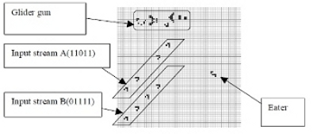
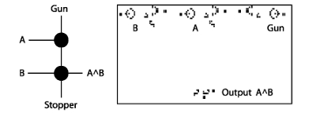
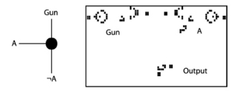
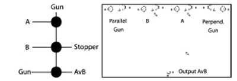

Logic Gates
In order to perform any significant computation, we will need to manipulate data, and a common way of doing this is via the basic logic operations – NOT, AND, OR. The “bit stream” is a stream of gliders, each one coming at a fixed interval – the presence of a glider indicates a “1” and its absence a “0”.
The stream of gliders emitted by the gun will destroy one of the input streams. Thus, both streams must have value 1 for a glider to survive. The output will be on the same path as input stream B. The role of the eater is to destroy gliders coming from the gun, in case they have not encountered any input, preventing their escape and potential damage to the rest of the circuit.
Rennard’s LogiCell
The definitive resource for exploring Life’s logical capabilities is Jean-Philippe Rennard’s LogiCell Java applet. He designed a system of glider guns and eaters, which, with minimal tweaks, can simulate all the basic logic gates.
When an input is set to 0, an eater destroys all of the gliders produced by the corresponding gun. Eliminating the eater lets the glider stream proceed further into the system, becoming a 1.
A glider reaching the centre from the left side indicates that the output of the equation is 1. Below you can see implementations of the AND, OR, and NOT gates.
  